App for book flights
Case study about the experience of booking and purchasing flights for an airline in a mobile application.
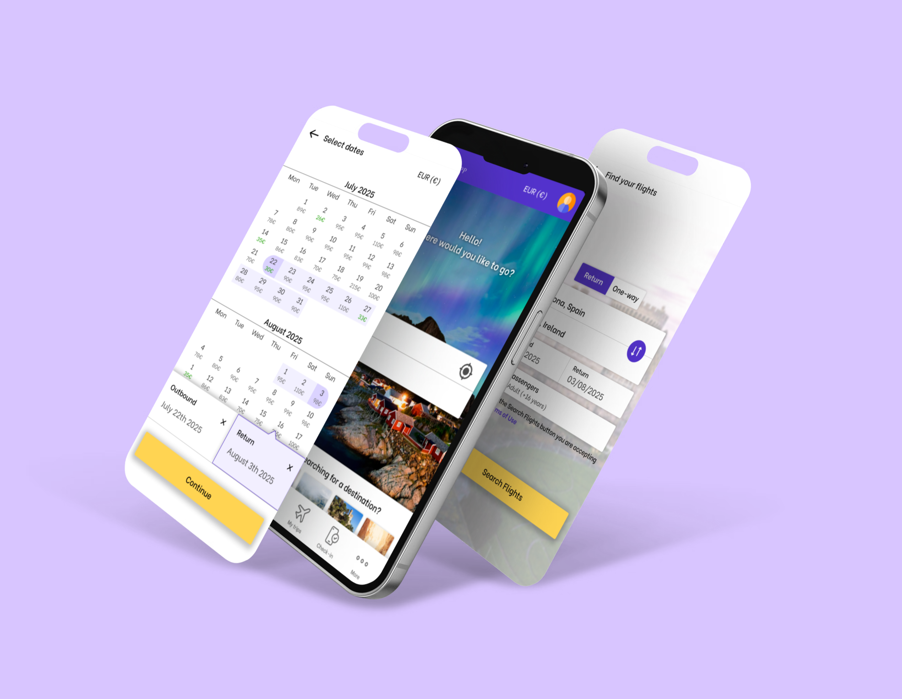
Overview
This project is a complete UX process: benchmarking, observation of user interactions, creation of an affinity diagram, and so on, with the goal of creating the flight booking process experience for an airline's mobile application.
Problem & Goals
Booking flights through mobile applications can often feel overwhelming for users due to the large amount of information, options, and additional services presented during the process. The goal of this project was to analyze existing airline applications, identify usability issues in the booking flow, and design a more streamlined and transparent experience that helps users complete their booking with confidence and minimal friction.
Process
Benchmarking
I compared the products and services of various airlines and an online travel agency (Ryanair, KLM, Vueling and eDreams) in order to see the strengths and weaknesses of each and be able to start the project with a stable base and knowing the market better.
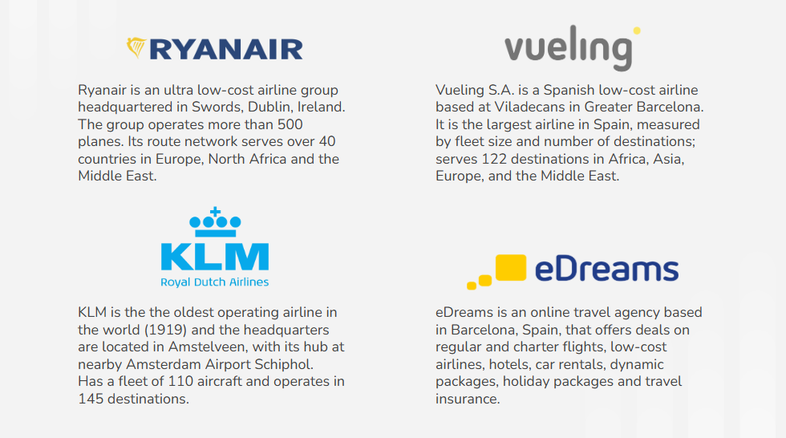
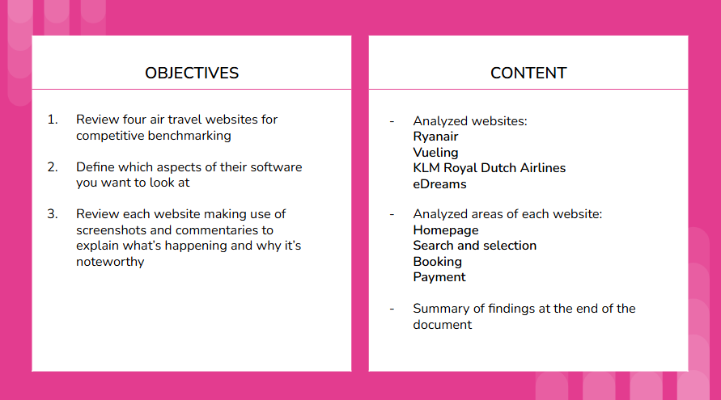
Online Survey - Airline App/Web Users
In this part of the project, I prepared a survey using Google Forms and sent it to people I know and others who agreed to participate in order to collect data on all types of users of airline websites and applications, in order to discover what was important to them and what things they look for when they go through the booking process.
Mobile Usability Test - Notes
In this part I watched some usability test videos, noted the profiles and information of each user who performed the test (occupation, frequency with which they used flight applications, what websites and applications they usually used, why they traveled regularly, the most important things for them when traveling, etc.) and took notes on the entire journey of these users testing the Aer Lingus and Eurowings applications.
I also took screenshots of the app's state to have context for the notes I was taking.
Later, I added a legend explaining the meaning of the green and red highlighters and used them to mark positive and negative parts of the entire experience.
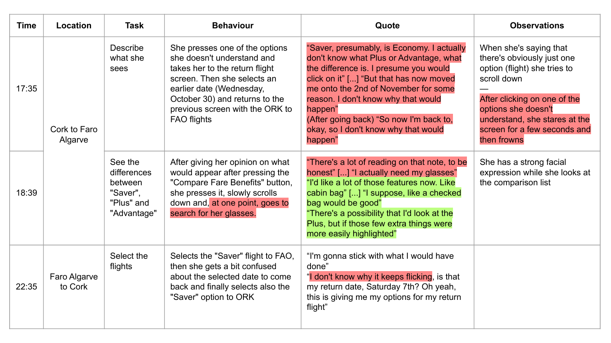
Usability Test
I prepared a script outlining the types of questions I would ask, the information I needed to gather, and the context I would provide to the users for the usability test.
I conducted this test with two different people, and each of them had to try out two flight apps: EasyJet and Vueling.
To ensure a high-quality test, without any distractions for the users and allowing me to properly observe the screen while they tested the applications, I set up an empty table with two screens: one for the laptop and a separate screen where I could watch them navigate the applications.
The laptop screen's brightness was set to the minimum and lowered to avoid distracting them, and they simply used a phone I lent them with the necessary applications for testing.
Between the two screens, I placed a microphone, and in front of the user, I positioned a webcam to record their reactions while they used the applications.
Finally, using an application that connects the computer and the phone, I positioned the live screen recording next to the webcam recording so that I had both videos together while the usability test was being recorded.
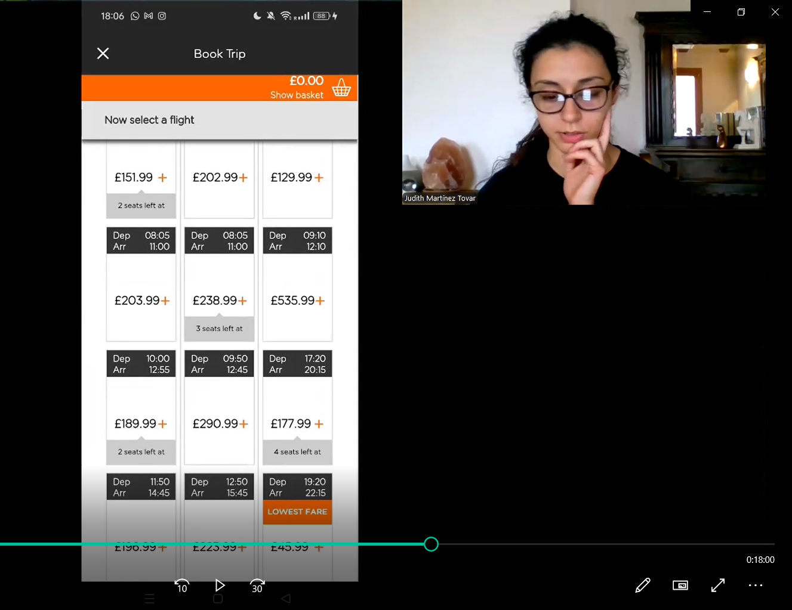
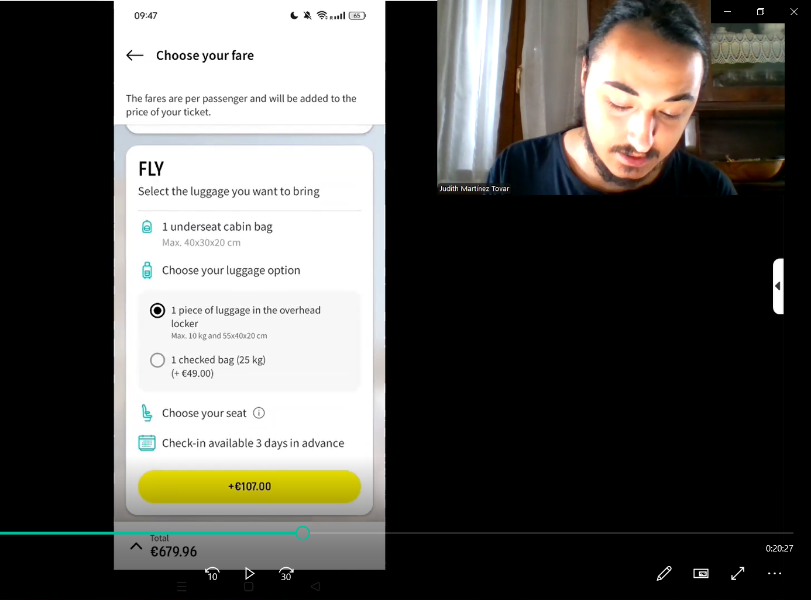
Affinity Diagram
Based on information gathered during previous user research, I started creating the Affinity Diagram on the Miro website.
I prepared a color legend to separate the notes into three distinct groups: user context (yellow), pain points (red), and positive points (green).
I set a time limit for note-taking and involved another person in the process so I wouldn't rely solely on my own perspective and could gather information I might have missed.
Once we filled the entire surface with notes and time was up, I began sorting them into groups, until I arrived at what I considered the final version: the one with the most appropriate groups for the notes.
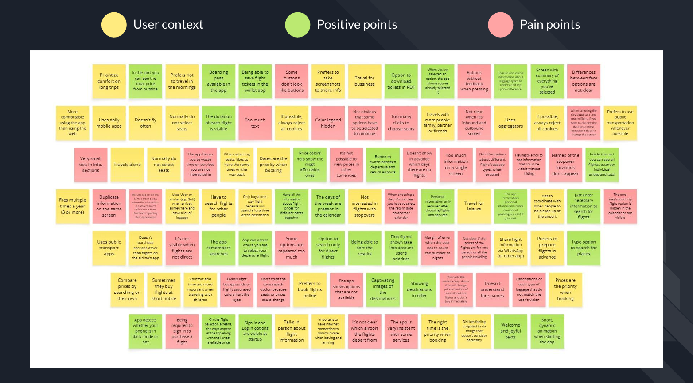
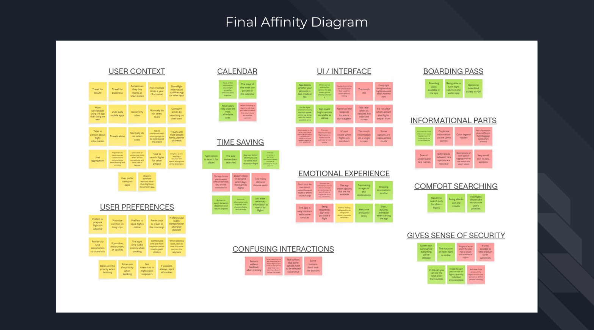
Customer Journey Map
To add more structure to the analysis, I created a Customer Journey Map based on the usability tests performed.
This made it easier to understand the user's process and mood throughout the entire flight search process until the end.
First I did it by hand and then I transferred the information to digital using Illustrator.
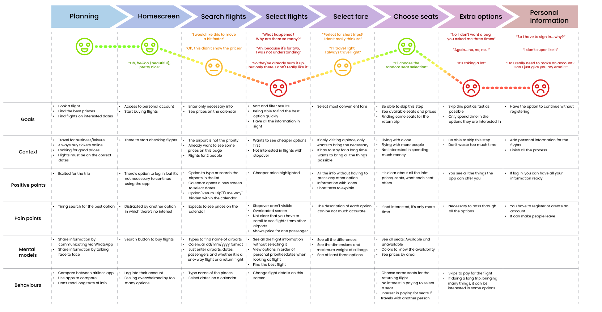
Flow Diagram
Once all the necessary information was gathered and before jumping into the design process, I created a Flow Diagram to ensure how users would navigate through the application.
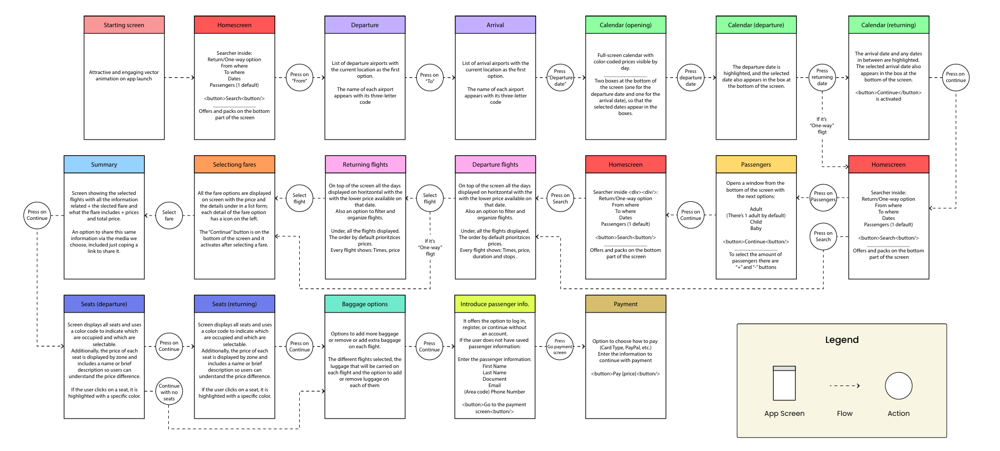
Interaction Design
At this point in the project, the planning of screen and interaction design began. With the tests completed, information gathered, and the flow diagram finalized, it was time to pick up a pencil and paper and start replicating all the screens and simulating the process on paper.
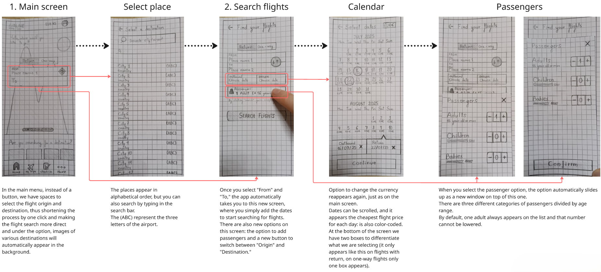
Anotated Wireframes
Finally, once the prototype was completed, I also created a document with Figma wireframes and annotations that provided additional information on certain details, so that the developers could build the product accurately.
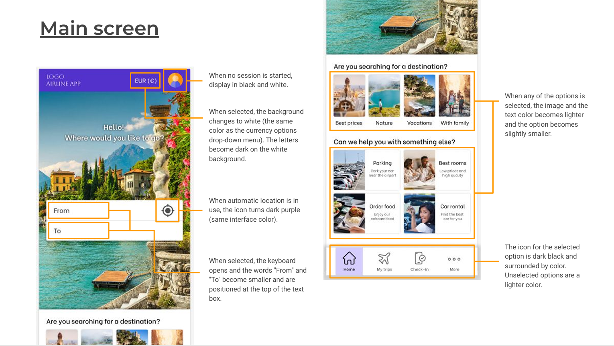
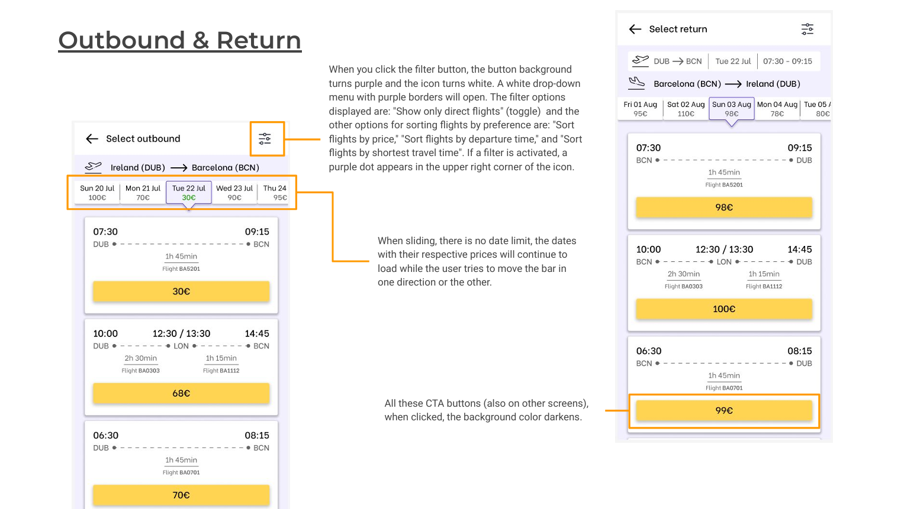
Final Outcome
You can access the Figma prototype here: Airline App - Prototype
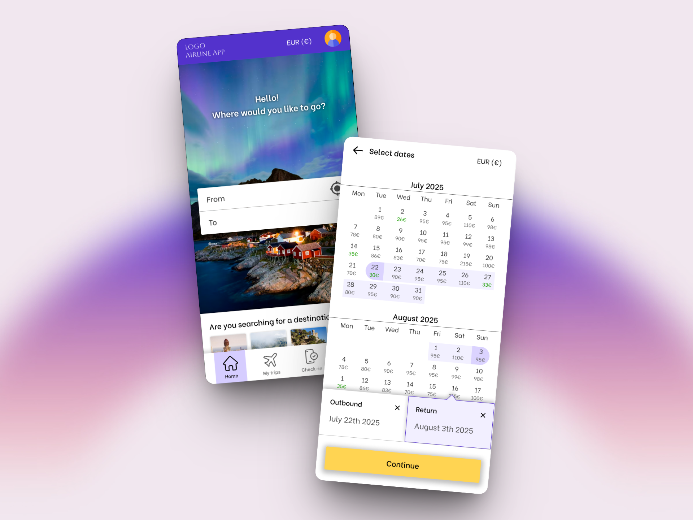
The final product is a prototype that eliminates unnecessary steps, displays and highlights all relevant information, explains existing options, avoids repetition when offering services, and saves time in some processes.
Reflection
This project helped me better understand how complex and multi-layered the flight booking process can be for users. Through benchmarking, surveys, and usability testing, I discovered that even small design decisions can significantly affect how confident and comfortable users feel when completing a booking. Observing real users interact with existing airline applications was especially valuable, as it revealed pain points that are not always obvious when simply analyzing an interface.
One of the most important lessons from this project was the value of structuring research findings. Creating the affinity diagram and customer journey map allowed me to transform a large amount of scattered information into clear patterns and insights that guided the design decisions later in the process.
If I were to continue developing this project, I would conduct additional usability testing on the prototype itself in order to validate the proposed solutions and identify further improvements. Expanding the number and diversity of participants would also provide deeper insights into different types of travelers and their needs.
Overall, this project strengthened my understanding of the importance of research-driven design and reinforced the idea that successful interfaces are the result of continuous testing, iteration, and careful attention to user needs.